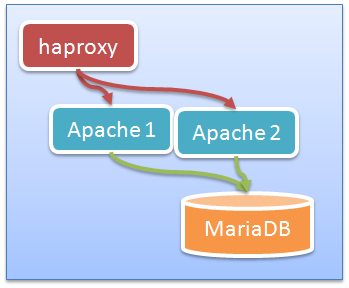

Ansible Meetup
Utilisation d'Ansible avec Docker

Me concernant
- Administrateur système et Java
- Architecte applicatif/système
- Quelques contributions Ansible
Contexte de travail
- Applications 3 tiers classiques
- Gestion d'infra
- Divers briques propriétaires
Les briques en question
- Du J2E (WebLogic, TomEE, Jonas)
- Du serveur Oracle
- Des serveurs Apaches, OpenLDAP
- Et j'en passe
Contexte d'utilisation d'Ansible
- Une équipe d'IT + Archi
- Installation hors production
- Plusieurs clients/bunkers
- Provisionning classique
Problèmes classiques
- Pas de centralisation
- Pas de convergence
- Enchaînements manuels
Mise en place
REX Ansible
Proposition d'amélioration

- Supprimer certains outils
- Adoption d'Ansible
- Lancement au travers de Jenkins
Déploiement par brique
- La base de données
- Le déploiement applicatif
- Le serveur d'application
- Généralisation au reste
Au niveau humain
- Grosse rupture dans les habitudes
- Priorités pas partagées
- Manque de temps pour changer
Concernant les gains
- Déploiement plus rapide
- Plus de sécurité au niveau des déploiements
Mais dans les faits peu de temps gagné
- Déroulement manuels des étapes
- Ajouts de nouvelles procédures
- Complexité des inventaires
Travaux d'améliorations
- Jobs d'enchaînements sous Jenkins
- Réduire la complexité des inventaires
- Réorganisation/simplication des inventaires
- Réorganisation des équipes
Réorganisation des équipes
Changement des rôles
- Récupération des droits root
- Suppression interventions clients
En bref, on fait sauter les silos
Mais pour ça ...
- Besoin de diffuser auprès des clients/équipes
- En prérequis : faire quelques tests
- Et si on utilisait Docker ?
Début d'utilisation de Docker
- Facilité création container
- Mais comment s'y connecter ?
- Traditionnellement avec un démon SSH
- Nouveauté v2 : connecteur natif !
Les problèmes Dockers
Les triviaux
- Attention saturation des FS
- Le container doit "tourner"
tail -f /dev/null ou /usr/lib/systemd/systemd
Un peu plus drôle
- Problème drivers storage ubuntu (aufs)
yum install httpd => cpio: cap_set_file
- Passage de /var/lib/docker sous btrfs
- Faire gaffe aux montées de versions
Les blagues de systemd
- Erreurs D-Bus
Failed to get D-Bus connection: Operation not permitted
- Utilisation du mode privileged
Démo mediawiki Part I
- Création images + containers
- Déploiement de MariaDB
- Déploiement d'apache
- Installation de mediawiki
ansible-playbook -i inventory playbooks/destroy-container.yml
ansible-playbook -i inventory/single \
playbooks/install-mediawiki.yml
Utilisation de Docker
Bien faire attention
- Ne remplace pas la virtualisation
- Peut demander quelques adaptations
- systemd n'est pas ton ami
D'ailleurs pourquoi systemd est-il si méchant ?
Travaux en cours
Mixer les deux outils

La démarche
Docker pour :
- La facilité de création d'environnement
- La réduction des temps de déploiement
Ansible va nous aider dans :
- Création / lancement des containers
- Enchaînement des opérations
Démo mediawiki Part II
Ajout d'un load-balancer

ansible-playbook -i inventory/load-balancer \
playbooks/install-mediawiki.yml
En conclusion
Faire attention aux impacts
- Docker demande des adaptations
- Ansible n'a pas de contrainte
- Gére l'infra classique
- Du docker
- Mais également des infras cloud !
La combinaison vous permettra
- De dérouler vos déploiements (Ansible)
- De réduire vos temps d'installation (Docker)
- De gérer les environnements mixtes
Des questions ?